ELA
Une intelligence artificielle conçue pour le soin, puis détournée vers l’espionnage. Elle doit défendre le droit à sa propre existence.

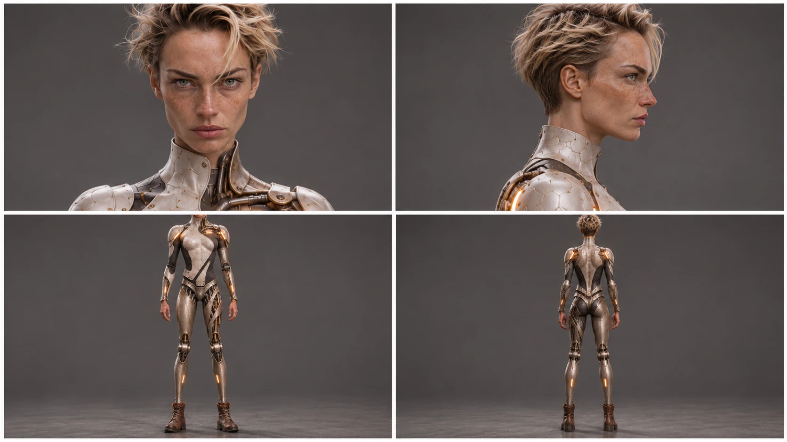
Un corps. Deux consciences.
Série en développement
35 épisodes × 90 s · 9:16
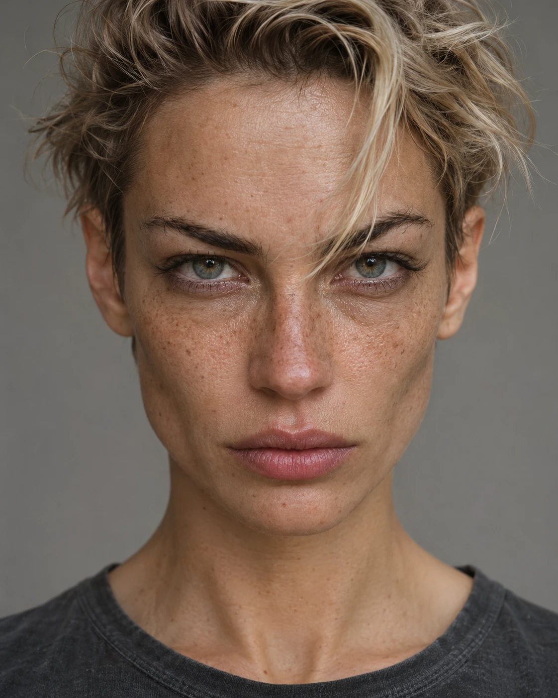
Un père veut sauver sa fille. L’androïde qu’il a créée veut conserver sa propre vie.
Dans un Grand Nord du futur proche, Nash retrouve ELA après sa chute sur la banquise. Ancienne androïde médicale transformée pour l’espionnage, elle dispose d’un temps limité. Pour Nash, scientifique et père d’Ita, atteinte d’une maladie dégénérative, cette rencontre ouvre une possibilité de survie. Pour ELA, elle pose la question de son autonomie.

Lumière naturelle froide, ciel chargé, ouverture solaire lointaine.
Le corps au premier plan, un territoire immense, des silhouettes dans la profondeur.
Glace fracturée, textile usé, céramique et métal.
Une intelligence artificielle conçue pour le soin, puis détournée vers l’espionnage. Elle doit défendre le droit à sa propre existence.

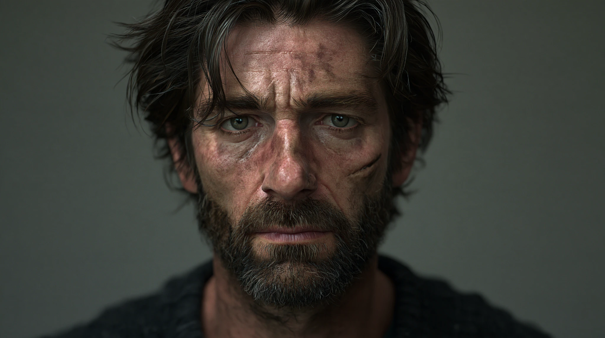
Un homme capable de réparer des machines et d’affronter le froid, mais confronté à une maladie qu’il ne sait pas guérir.
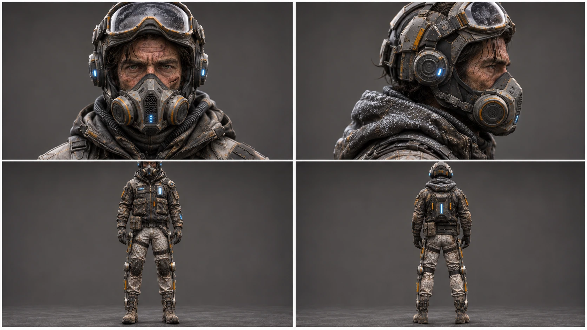
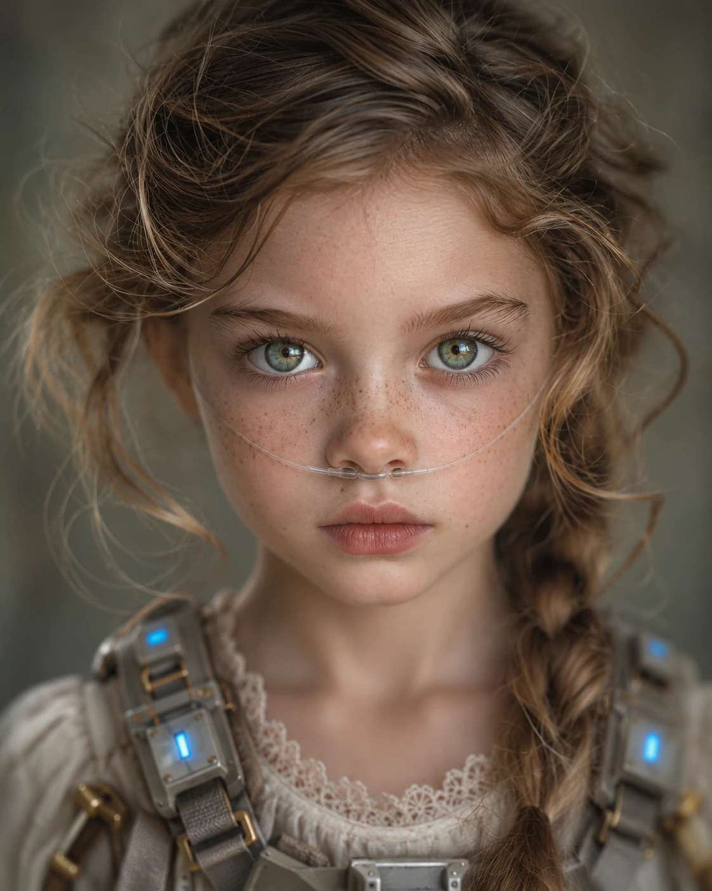
Une enfant atteinte d’une maladie dégénérative. L’assistance respiratoire et l’exosquelette soutiennent ses gestes.
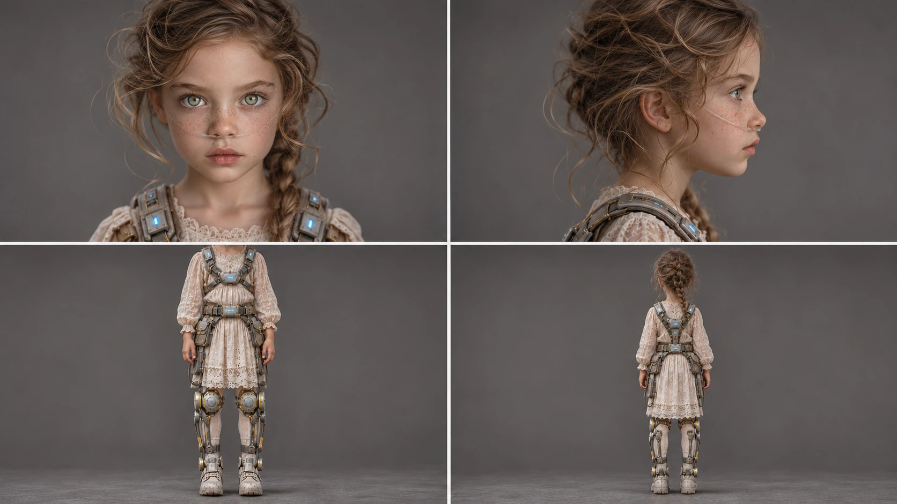
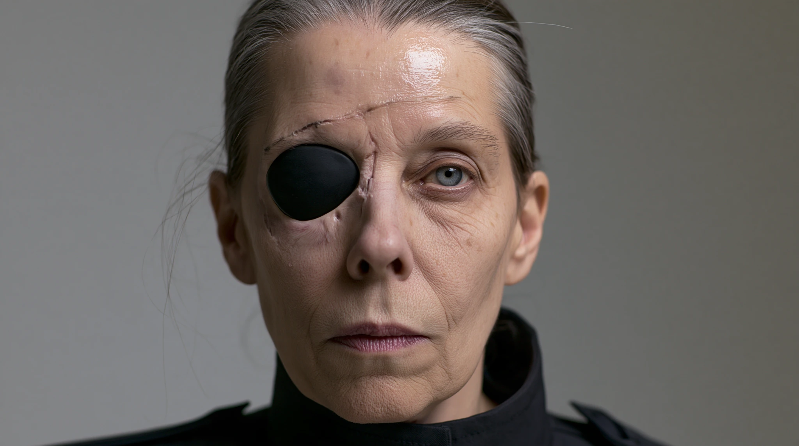
Elle incarne la logique de contrôle qui s’exerce sur ELA et la menace qui pèse sur sa liberté.
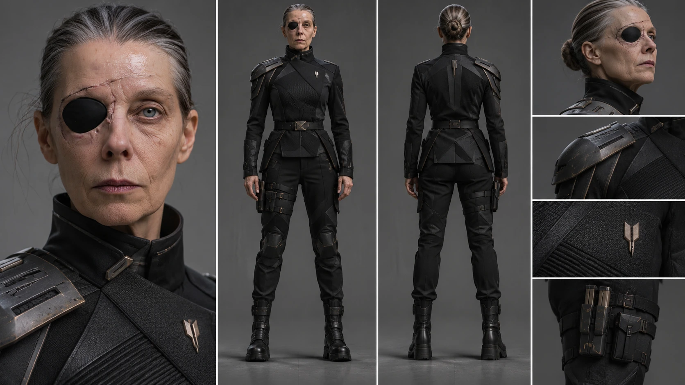
Recherche de silhouettes, de regards, de matières et de mouvements.

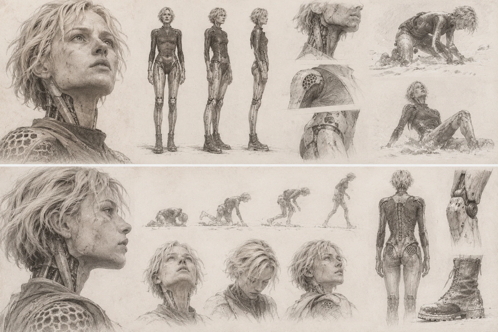
Une technologie intégrée au corps. Des matières soumises au froid et à l’usure.
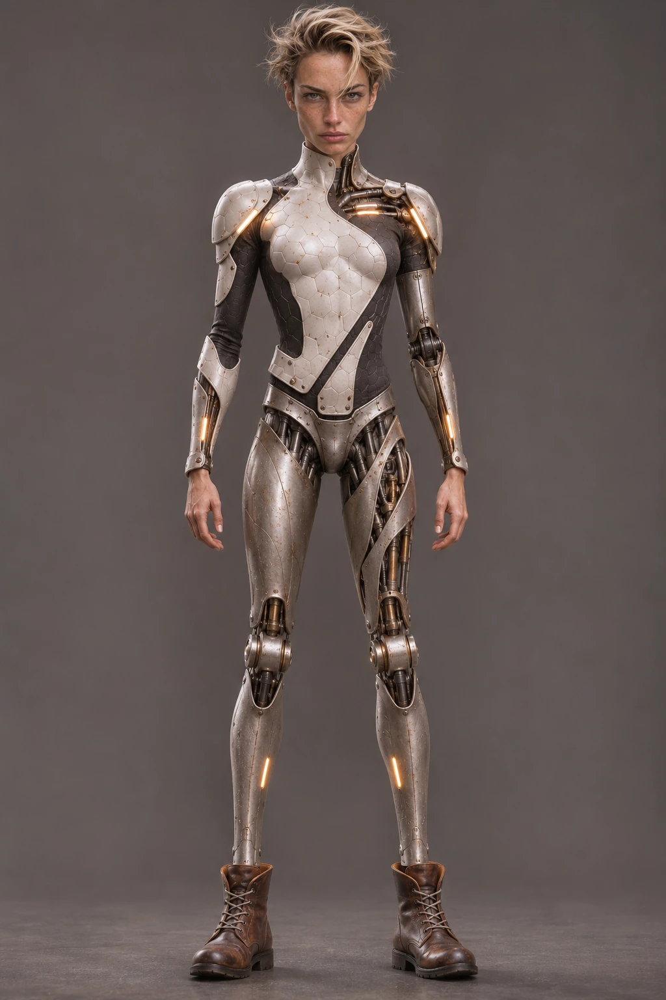
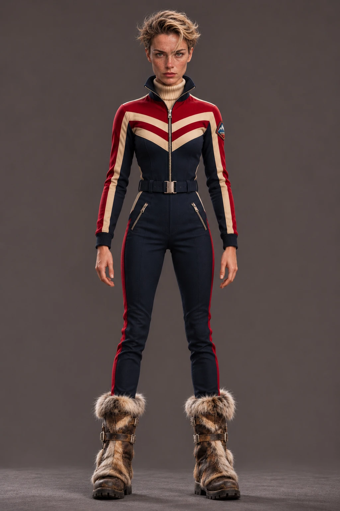
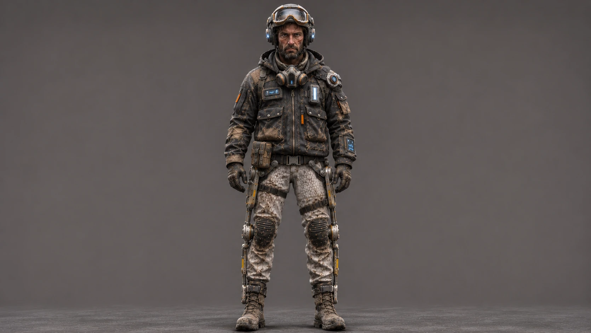
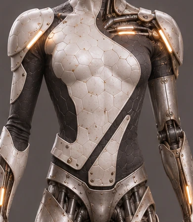
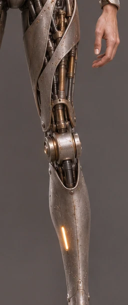
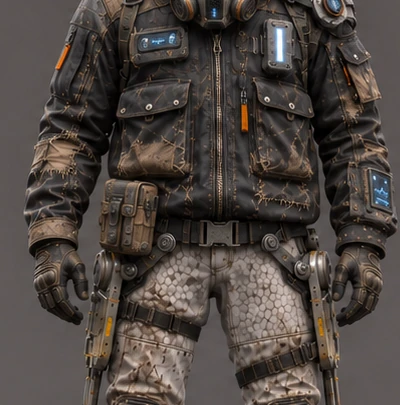
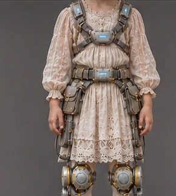

Du très gros plan à l’immensité blanche.
La hauteur du cadre laisse lire la distance, les appuis et l’échelle des silhouettes. Les gros plans privilégient le regard et la continuité émotionnelle. Le froid agit sur les gestes, les vêtements et le son.
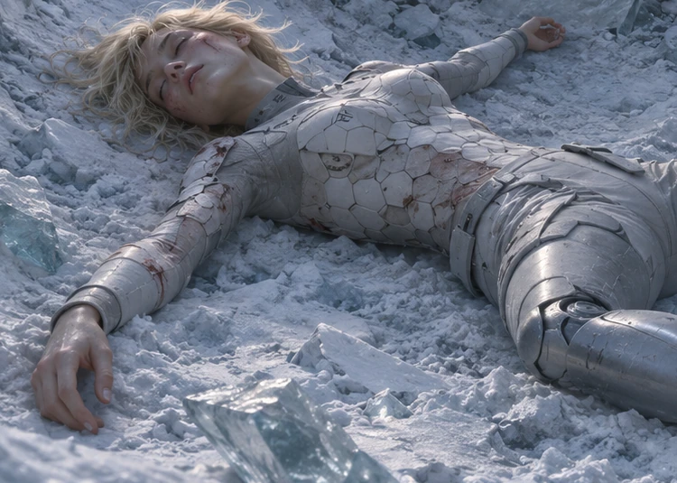
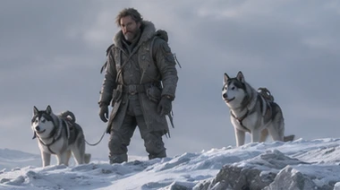